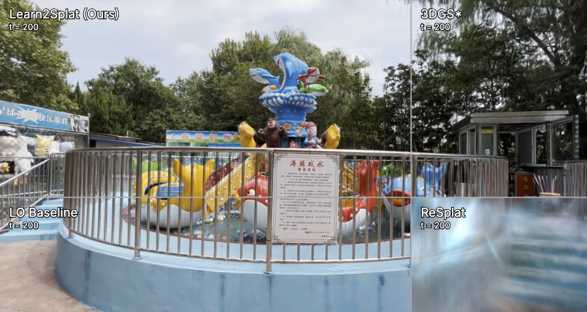
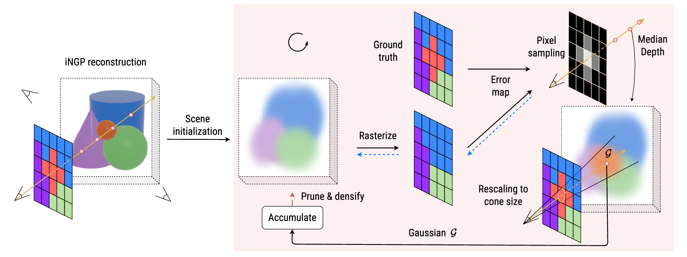
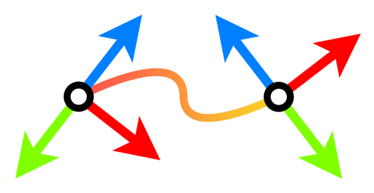

Stefano Esposito
I am a PhD student at the University of Tübingen, part of Autonomous Vision Group headed by Prof. Andreas Geiger.
Research: I am particularly interested in 3D computer vision topics leveraging coordinate-based neural networks (neural fields). Such methods parameterize the physical properties of scenes or objects in space and time, and have been successfully applied to problems such as novel view synthesis, 3D reconstruction, pose estimation and animations.
Bio: I've obtained a bachelor's degree in computer science and a master's degree in "artificial intelligence and robotics" at the University of Rome "La Sapienza". During and after my master I have been an Erasmus student and a full-time research associate at the Hochschule Bonn-Rhein-Sieg in Bonn, Germany. I see myself as an educated programmer and a true technology enthusiast; in my spare time I enjoy learning new things, traveling, and keeping up to date with what is happening in the world. I love connecting with nature by hiking in the mountains.
For any inquiries, feel free to reach out!

Publications

Naama Pearl, Stefano Esposito, Haofei Xu, Amit Peleg, Patricia Gschoßmann, Lorenzo Porzi, Peter Kontschieder, Gerard Pons-Moll, Andreas Geiger
arXiv.org, 2026
@InProceedings{pearl2026learn2splat,
author = {Naama Pearl and Stefano Esposito and Haofei Xu and Amit Peleg and Patricia Gschoßmann and Lorenzo Porzi and Peter Kontschieder and Gerard Pons-Moll and Andreas Geiger},
booktitle = {arXiv.org},
title = {Learn2Splat: Extending the Horizon of Learned 3DGS Optimization},
year = {2026},
}
Bartłomiej Baranowski, Stefano Esposito, Patricia Gschoßmann, Anpei Chen, Andreas Geiger
Proc. of the International Conf. on 3D Vision (3DV), 2026
@InProceedings{baranowski2026conegs,
author = {Bartłomiej Baranowski and Stefano Esposito and Patricia Gschoßmann and Anpei Chen and Andreas Geiger},
booktitle = {Proc. of the International Conf. on 3D Vision (3DV)},
title = {ConeGS: Error-Guided Densification Using Pixel Cones for Improved Reconstruction with Fewer Primitives},
year = {2026},
}
Stefano Esposito, Anpei Chen, Christian Reiser, Samuel Rota Bulò, Lorenzo Porzi, Katja Schwarz, Christian Richardt, Michael Zollhoefer, Peter Kontschieder, Andreas Geiger
Proc. IEEE Conf. on Computer Vision and Pattern Recognition (CVPR), 2025
@InProceedings{Esposito2025VolSurfs,
author = {Stefano Esposito and Anpei Chen and Christian Reiser and Samuel Rota Bulò and Lorenzo Porzi and Katja Schwarz and Christian Richardt and Michael Zollhoefer and Peter Kontschieder and Andreas Geiger},
booktitle = {Proc. IEEE Conf. on Computer Vision and Pattern Recognition (CVPR)},
title = {Volumetric Surfaces: Representing Fuzzy Geometries with Layered Meshes},
year = {2025},
}
Stefano Esposito, Andreas Geiger
GitHub repository, 2025
@InProceedings{Esposito2024MVDatasets,
author = {Stefano Esposito and Andreas Geiger},
note = {GitHub repository},
title = {MVDatasets: Standardized DataLoaders for 3D Computer Vision},
year = {2025},
}
Anpei Chen, Haofei Xu, Stefano Esposito, Siyu Tang, Andreas Geiger
Proc. of the European Conf. on Computer Vision (ECCV), 2024
@InProceedings{Chen2024ECCV,
author = {Anpei Chen and Haofei Xu and Stefano Esposito and Siyu Tang and Andreas Geiger},
booktitle = {Proc. of the European Conf. on Computer Vision (ECCV)},
title = {LaRa: Efficient Large-Baseline Radiance Fields},
year = {2024},
}
Daniele Baieri, Donato Crisostomi, Stefano Esposito, Filippo Maggioli, Emanuele Rodolà
arXiv.org, 2024
@InProceedings{Baieri2024ARXIV,
author = {Daniele Baieri and Donato Crisostomi and Stefano Esposito and Filippo Maggioli and Emanuele Rodolà},
booktitle = {arXiv.org},
title = {Efficient Generation of Multimodal Fluid Simulation Data},
year = {2024},
}
Daniele Baieri, Stefano Esposito, Filippo Maggioli, Emanuele Rodolà
arXiv.org, 2023
@InProceedings{Baieri2023ARXIV,
author = {Daniele Baieri and Stefano Esposito and Filippo Maggioli and Emanuele Rodolà},
booktitle = {arXiv.org},
title = {Fluid Dynamics Network: Topology-Agnostic 4D Reconstruction via Fluid Dynamics Priors},
year = {2023},
}
Stefano Esposito, Daniele Baieri, Stefan Zellmann, Emanuele Rodolà, André Hinkenjann
arXiv.org, 2022
@InProceedings{Esposito2022ARXIV,
author = {Stefano Esposito and Daniele Baieri and Stefan Zellmann and Emanuele Rodolà and André Hinkenjann},
booktitle = {arXiv.org},
title = {KiloNeuS: A Versatile Neural Implicit Surface Representation for Real-Time Rendering},
year = {2022},
}